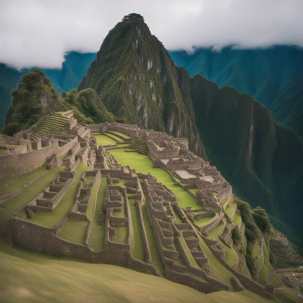

<h1> The 7 Wonders of the World</h1>

<h2> 1. The Colosseum </h2>

<h2> 2. Machu Picchu </h2>

<h2> 3. Petra </h2>

<h2> 4. Taj Mahal </h2>

<h2> 5. Cristo Redentor </h2>

<h2> 6. Great Wall of China </h2>

<h2> 7. Chichén Itzá </h2>
